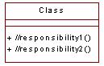

Standards:
Responsibilities
 |
A responsibility is a contract or an obligation of a class. It is a
statement of something an object can be asked to provide. Responsibilities evolve into one
(but usually more) operations on classes in design; |
| Related Information: |
|
Topics
WARNING: Responsibilities in Rose 
Rose does not support the modeling of responsibilities as a separate model item or
the display of responsibilities in their own separate class compartment on diagrams.
Responsibilities can be modeled as a stereotyped operation - this is what is proposed
by the Rational Unified Process: Rose Tool Mentor and documented by this standard.
Background
Responsibilities they can be characterized as:
- Services - the actions that the object can perform.
- Knowledge - the information that the object maintains and provides to other
objects.
Each analysis class should have several responsibilities; a class with only one
responsibility is probably too simple, while one with a dozen or more is pushing the limit
of reasonability and should potentially be split into several classes.
That all objects can be created and deleted goes without saying; don't restate the
obvious unless the object performs some special behavior when it is created or deleted.
(Some objects cannot be removed if certain relationships exist.)
Naming Standards
Responsibilities are just free-form text. In practice, a single responsibility is
normally written as a phrase, or a short sentence (up to several words).
Note: All responsibility names in Rose are prefixed with // (See Documentation in Rose below.
The name should reflect the role and responsibility the class has been assigned and not
how the responsibility is performed. The name should clearly show its purpose.
General names, like Get Information, should be avoided because they do not say much and
will not be interpreted the same way by all readers. Instead, use a name that shows
exactly what is done, for example, Get Address.
Note it is possible to have qualified responsibilities i.e. Get Information (Address)
– if this approach is adopted ensure that the responsibilities are all qualified
sufficiently to remove ambiguities.
Responsibilities that are conceptually the same should have the same name, even if they
are placed in different classes, or implemented in entirely different ways, or even if
they work on different input.
General Documentation Standards
Each responsibility must have its description completed. This should be a short (up
to several
sentences) description describing the responsibility's purpose from a business
perspective.
All responsibilities support full public access. Private and package level
responsibilities are unlikely to be discovered during analysis when applying Use Case
focused techniques .
A responsibility must be understandable for those who want to use it. To this end you
should make the following clear in the brief description of the responsibility:
- Avoid formalizing its input because this is difficult to maintain. Instead, express the
input being passed in an informal way. This could mean writing something like, "the
given weight is added to the Pallet's weight" or "the Pallet selected by the
user."
- Define important output informally, because a high level of formalism is difficult to
maintain. It is often unnecessary to state the output because the name of the
responsibility often identifies the output, for example, Get Address and Calculate Average
Weight.
- Many responsibilities must be able to return error codes to indicate what went wrong
during the execution. Although these error codes should not be stated in the
responsibilities, it can be useful to express how error affects what happens, for example:
"The Task object cannot remove itself from the Task queue if the priority is
high.".
- The responsibility should be described in informal terms. Describe which other objects
are interacted with and what they are asked for, but avoid using explicit responsibility
names.
Stereotypes
No responsibility stereotypes have been identified. Responsibilities themselves
are represented in Rose as stereotyped operations.
Examples
None
Documentation in Rose
Responsibilities are represented in Rose as stereotyped operations. The
stereotype used will be <<responsibility>>.
It would be nice to be able to see the stereotype tags on the sequence and
collaboration diagrams – unfortunately Rose98i does not support the visibility of
stereotypes on these diagrams. To enable responsibilities to be clearly visible on
interaction diagrams, and when the stereotype is suppressed, all responsibility names will
be prefixed with //.
The benefit of modeling the responsibilities using Rose operations is that the
responsibilities themselves then become reusable.
Note: as we progress into design the responsibilities modeled as operations will be
refined into operations. The responsibilities themselves will be integrated into the Class
documentation.
Note: there are other strategies to handling responsibilities, these include:
- Maintain a separate analysis model – in this case the responsibilities would be
maintained on the analysis types.
- Preserve the responsibility operations in the design model as additional documentation.
This is dependent upon the implementation and code generation strategy adopted. In some
cases the responsibility operations will need to be removed from the classes otherwise the
code generation will create unwanted methods in the code for them.
|